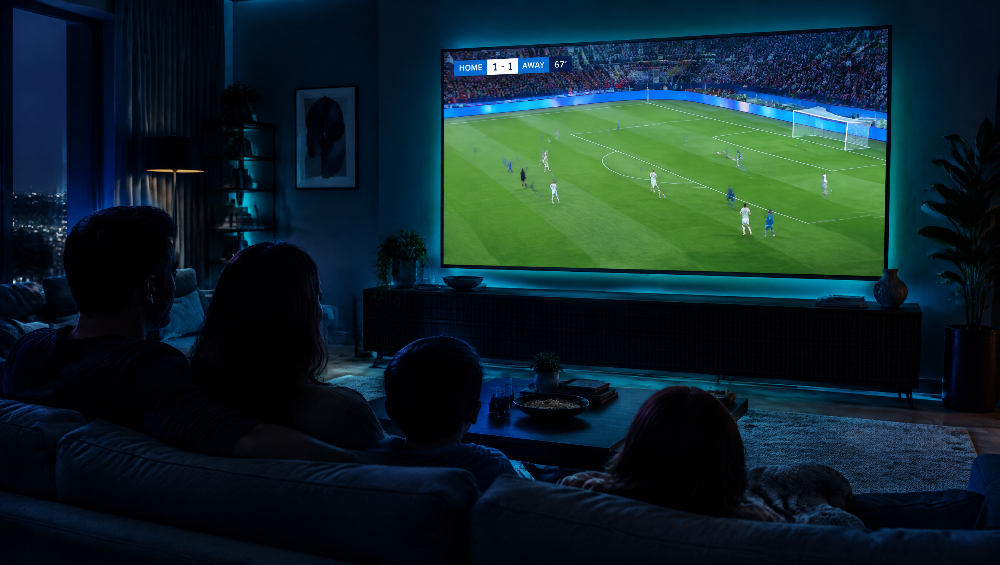
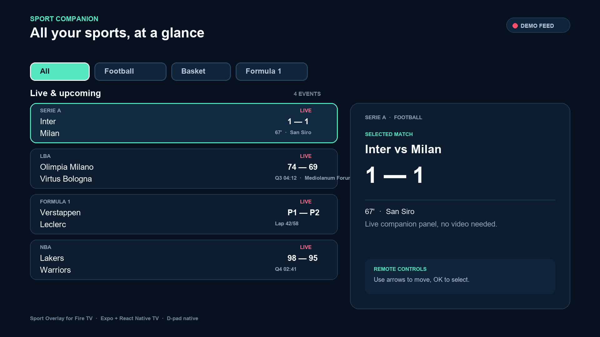
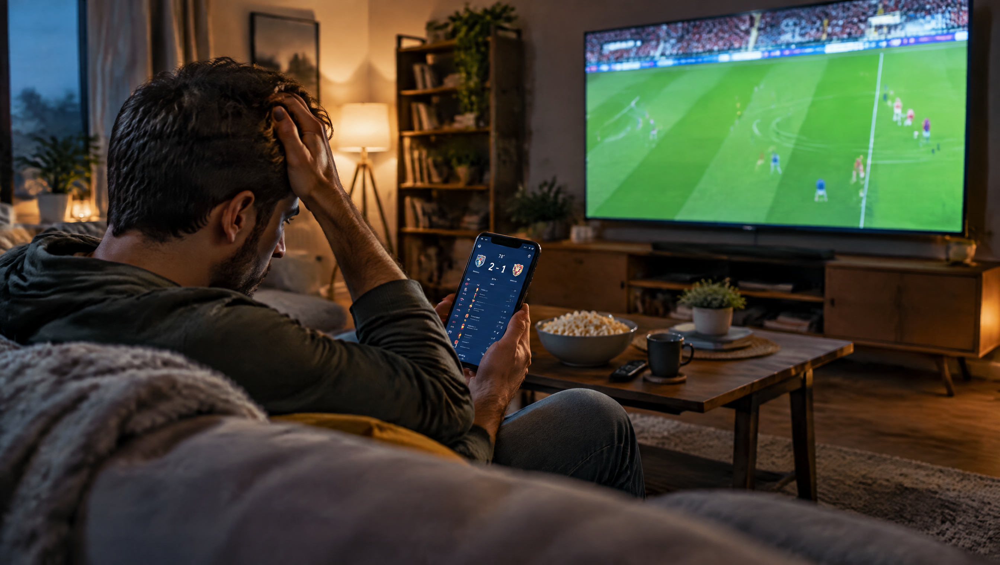
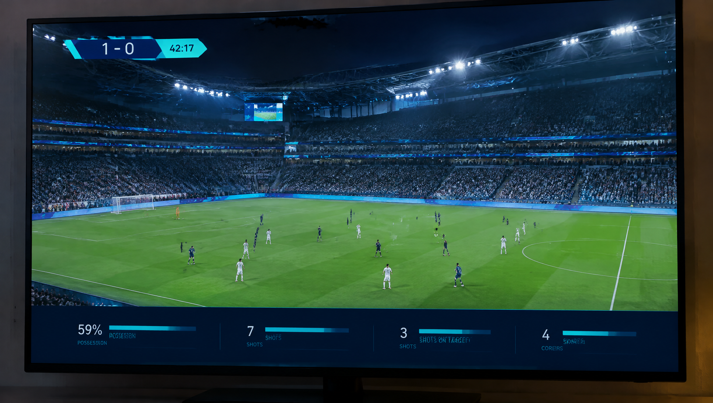
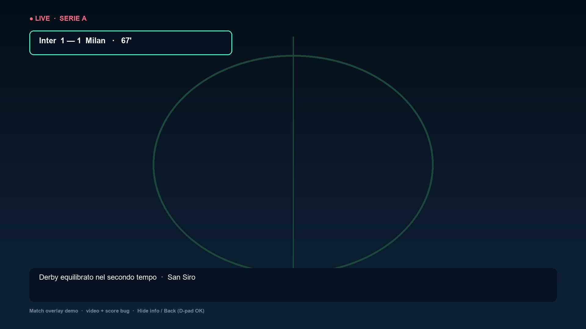
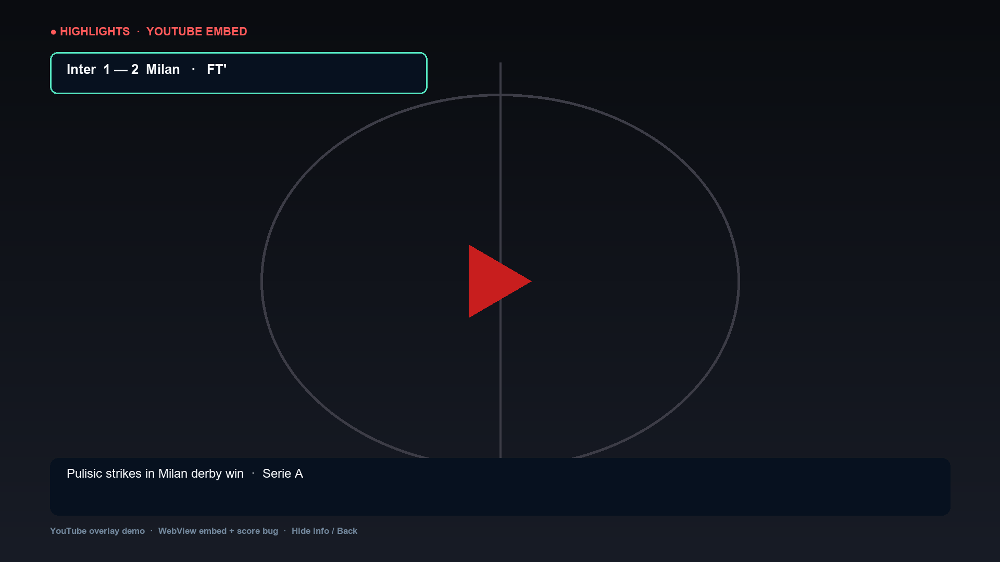
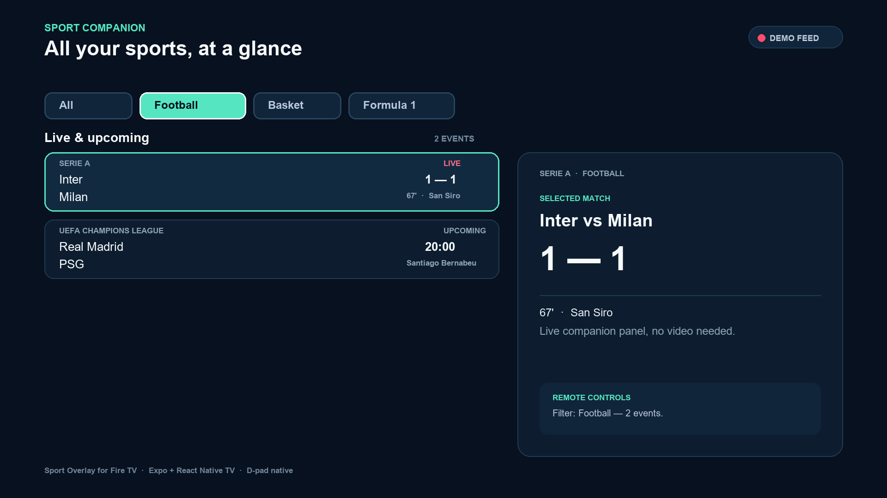
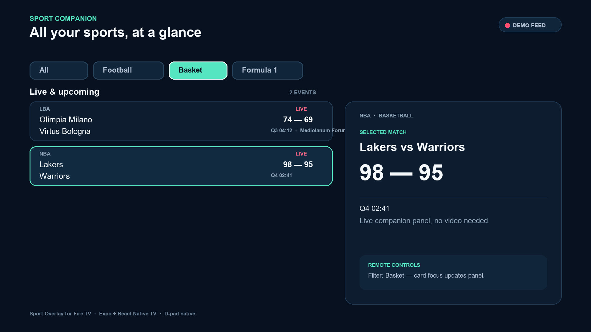
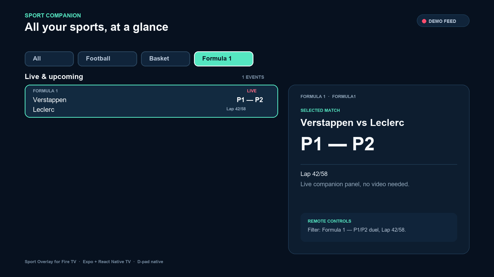
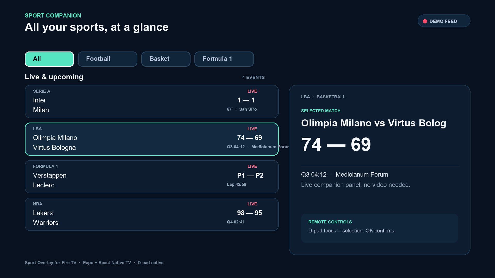

SLIDE 1 / 10Title — All your live sports, at a glance
Sport Overlay for Fire TV. A companion live multi-sport overlay for the biggest screen in the house. Football, basketball, Formula 1. Remote-first: arrows + OK, zero typing. Repo: github.com/AliceMessi/amazon-sport-overlay

AI-generated vision render (Higgsfield GPT Image 2.5).

SLIDE 2 / 10The Problem — live sports are fragmented
- Scores live in phone apps while the TV shows one match at a time.
- Switching apps/channels breaks immersion.
- TV guides are not built for live, multi-sport glanceability.
- Fans miss goals, comebacks, overtakes.

SLIDE 3 / 10Who feels it
- Casual fans / families: one calm “what’s on now” screen.
- Multi-sport fans: Serie A + NBA + F1 in one evening.
- Fire TV owners: powerful living-room device, underused for live companion UX.
- Insight: 10-foot UI must be couch-readable and drivable with 5 buttons.
SLIDE 4 / 10The Solution — a calm remote-driven companion
- One landscape screen: filters top, event list left, detail panel right.
- Live badges, scores, period (67', Q3 04:12, Lap 42/58), venue, headline.
- Demo feed included — runs with zero API keys.
- TV-safe contrast and focus states, offline-capable UI.

SLIDE 4b / 10NEW — Watch with Overlay (video + score bug)
- Yes — a match plays fullscreen with our info on top. New
MatchOverlayScreen: YouTube derby highlights autoplay (WebView embed, no player chrome) + score bug top-left + headline/venue bar bottom. mp4 fallback viaexpo-video. - From any detail panel: Watch with overlay → video + overlay;
Hide info/Backvia D-pad OK. - Change match video by swapping one ID (
YOUTUBE_DEMO_ID). - Tests:
matchOverlay.test.tsx. Suite now 6 files, 24 tests, green.


SLIDE 5 / 10How it works (1/2): Filter → List
- Pick All / Football / Basket / Formula 1 → list filters instantly.
- First visible match auto-selects. Counter shows scope (“N EVENTS”).


SLIDE 6 / 10How it works (2/2): Focus → Detail
- D-pad focus = selection.
onFocusupdates the panel, OK confirms. - Detail panel: competition, matchup, big score, period, venue, remote hint.
- Every control
focusablewith visible selected state.


SLIDE 7 / 1010-foot & D-pad UX
- Landscape-first, 48px margins, large type,
#07111F / #F7FAFCcontrast. - Focus ring always visible; wrap-around navigation via
selectionMovedreducer. - No keyboard/touch assumptions; Leanback launcher + 320×180 banner.
- Tests: filter, focus-update, all-buttons-focusable (
liveSportsScreen.test.tsx).
SLIDE 8 / 10Architecture
App.tsx → LiveSportsScreen → sportsDashboard reducer + filterMatches src/domain/matches.ts — Sport, SportMatch types src/data/demoMatches.ts — 5 local events (Serie A, LBA, NBA, F1, UCL) src/state/ — createDashboardState / dashboardReducer plugins/withFireTv.js — Leanback + banner config
- Expo 57 · React 19 · react-native-tvos · TypeScript strict.
npm run verify= typecheck + eslint + jest → 19/19 green.
SLIDE 9 / 10Why this fits the track
- Fire TV priority category: sports.
- Demo-ready on Fire OS / Vega OS; web export in
dist/for quick review. - Friction-free judging:
npm install && npm test, no secrets. - Open Source mini-challenge eligible: MIT + public repo.
SLIDE 10 / 10Roadmap & Ask
- Now: demo feed, 3 sports, D-pad nav. Next: live WebSocket scores, Alexa+ “who’s winning?”, favorites + reminders, logos.
- Ask: feedback on Fire TV RN tooling (prebuild, focus, Leanback).
- Try:
npm install && npm run verify && npx expo start· Video (<3 min, EN): to record on Fire TV/simulator.